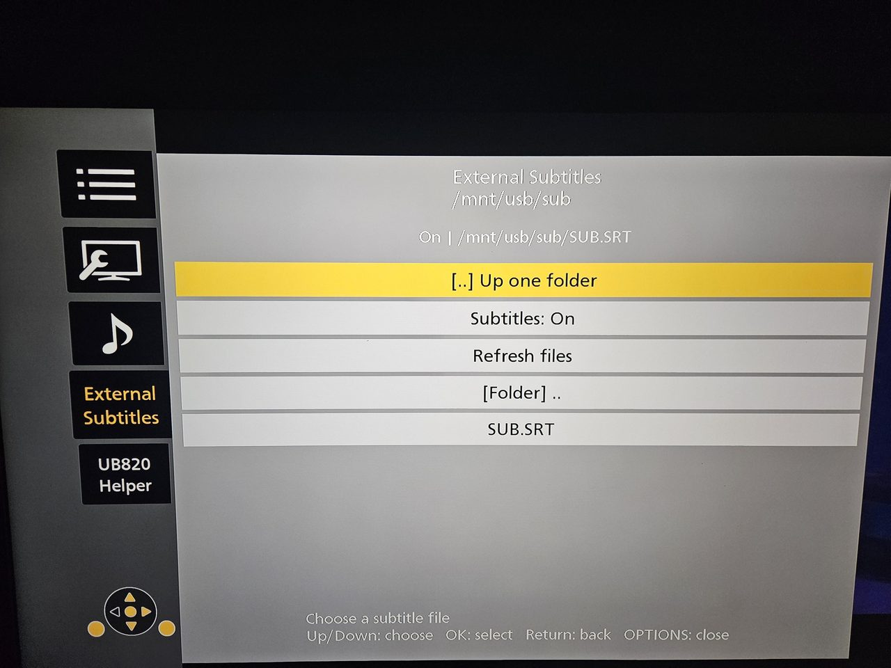
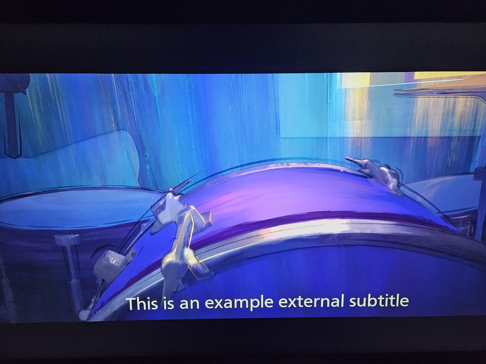
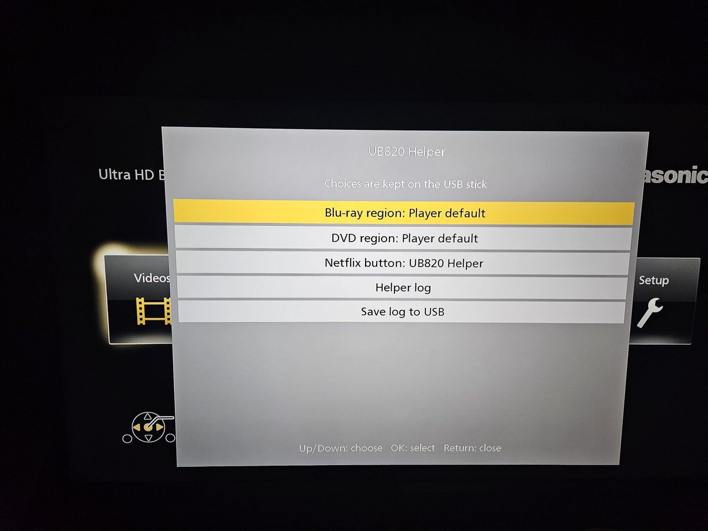

UB820 Helper
External .srt subtitles and extra settings for the Panasonic DP-UB820,
supporting firmware 1.82 and 1.85. It runs in RAM and leaves your
player's firmware untouched; your saved preferences stay on the USB stick.
Choose subtitle files during playback, adjust their size, position, timing and brightness, and let each Blu-ray remember its own subtitles automatically. UB820 Helper also adds disc region switching, auto power-off control, and optional diagnostics. Press the Netflix button to open Helper over the home screen, menus or a film, or open Player Settings > System > UB820 Helper.
Download 0.3 and release notes · Configuration
 |
 |
| Browse folders in OPTIONS > External Subtitles | The selected subtitle file during a film |
Setup
You need a FAT32 USB stick and a DP-UB820 on firmware 1.82 or 1.85. The release ZIP contains everything ready to copy to the stick.
- Extract the release ZIP to the root of the USB stick (or copy the contents of
USB-CONTENTS/). KeepLOADER.MKVright next to thesubfolder. - Put your
.srtfiles anywhere on the stick — subfolders work. Save them as UTF-8 so accented characters display properly. - Start from a clean player boot. If Quick Start is on, unplug the player for a few seconds first.
- Plug in the stick, open USB > Video, and launch
LOADER.MKV. The player will say the file cannot be opened — dismiss that message. - Play a disc and open OPTIONS > External Subtitles to pick a subtitle file.
The helper stays active until the player fully restarts (Quick Start standby may keep it running). Leave the USB stick plugged in while using external subtitles or saving settings.
Updating from an earlier version
Replace LOADER.MKV and sub/engage on your stick with the new
files, then fully restart the player before launching the helper again. Keep
your existing sub/modules.cfg, saved settings (sub/ub820_menu.cfg,
sub/ub820_subtitles.cfg), and any SSH files.
External subtitles
Open OPTIONS > External Subtitles, browse to an .srt file, and press
OK. Subtitles start at the current playback position and automatically turn
on even if you previously turned them off. Selecting the same file again reloads
it. Subtitles: Off hides external subtitles without affecting the disc's own
subtitle track.
- Remembers where you left off: The browser reopens in the folder of the last subtitle file you chose, including after a restart.
- Per-disc subtitle memory: Each Blu-ray remembers the
.srtfile you chose for it, along with its synchronization and character code (up to 200 discs, stored insub/ub820_subtitles.cfg). The next time you play that disc, your subtitles load automatically instead ofsub/sub.srt. If the file was moved or deleted, it falls back cleanly tosub/sub.srt. Deletesub/ub820_subtitles.cfgto clear saved discs, or setmemory=offunder[external_subtitles]inmodules.cfgto disable it. (Applies to Blu-ray discs, not DVDs.) - Saved position and size: Changes you make to subtitle position or size in the player's Subtitle Settings are remembered automatically for future films. English labels fill in missing text on European-language menus.
- Smooth timing: Fractional subtitle timing is on by default, avoiding the player's built-in whole-second stepping.
Text brightness
Adjust external subtitle brightness from OPTIONS > External Subtitles:
- Left / Right: step by 1%. Up / Down: step by 10%.
- Changes preview live, including while paused.
- OK: save. Return: cancel and restore the previous brightness.
- Reset text brightness: restore and save Original (100%).
Lower values darken the text while keeping its black outline (0% draws black text; use Subtitles: Off to hide subtitles). This is independent of the player's Subtitle Luminance setting for disc subtitles.
UB820 Helper
Open Helper from OPTIONS, Player Settings > System, or the Netflix button. Press Netflix again or Return to close it.

| Setting | What it does |
|---|---|
| Blu-ray region | Choose Player default, A, B, C or A+B+C. Takes effect on the next disc launch (eject and reinsert if a disc is already playing). |
| DVD region | Choose Player default, No region check, Auto or 1–8. Note that the drive itself may still block encrypted out-of-region DVDs. |
| Netflix button | Open Helper, open Netflix as usual, or do nothing. |
| Auto power-off | Keep the player's automatic idle shutdown on, or disable it. Manual power-off still works normally. |
| CPU optimization | Experimental option to lower background CPU usage (only shown if enabled in modules.cfg). |
| Start SSH / Stop SSH | Diagnostic shell access (only shown if enabled in modules.cfg). |
| Helper log / Save log to USB | View recent helper messages or save them to the USB stick. |
Choices made in the menu are saved to sub/ub820_menu.cfg. If a USB write
fails, the menu lets you know and you can choose the option again to retry.
Configuration
Edit sub/modules.cfg to enable or disable
modules or change starting defaults, then restart the player and launch the
helper again. Settings saved through the on-screen menus (sub/ub820_menu.cfg)
take priority over modules.cfg; delete sub/ub820_menu.cfg to go back to
your modules.cfg defaults.
Out of the box, external subtitles, Helper menus, region controls, the Netflix shortcut and logging are enabled; regions stay on Player default, text brightness is 100%, and auto power-off stays On. SSH, CPU optimization, and detailed diagnostics are off by default.
CPU optimization (experimental)
To show the CPU optimization toggle in Helper, add or edit in modules.cfg:
[cpu]
enabled=1
optimize=off
Then switch CPU optimization to On in Helper. If a saved startup activation does not stay healthy, the helper automatically skips auto-enabling it on the next boot so you are never stuck in a bad state (you can still turn it on manually). Tested in short playback sessions on 1.82; not yet tested on 1.85. See the CPU module documentation for details.
SSH (diagnostic)
Set enabled=1 under [ssh] in modules.cfg, place your public key in
sub/authorized_keys, restart the player, and launch the helper. Choose
Start SSH in Helper to see the player's address:
ssh -p 2222 root@PLAYER_IP
SSH runs in RAM and disappears on a full restart. Optional password login and
autostart on helper launch are documented in
modules.cfg. Only enable SSH on a trusted
network. See the SSH documentation for
included tools and details.
Logging
Use Save log to USB in Helper whenever you need a log, or enable continuous
saving in modules.cfg:
[log]
save=always
Logs are written to sub/ub820_submenu.log, with the previous session kept as
sub/ub820_submenu.prev.log. Set diagnostics=1 to also record crashes, hung
threads and kernel messages.
Compatibility and limits
- Firmware 1.82: primary development and hardware-testing target.
- Firmware 1.85: supported, though not every feature has been tested on 1.85 hardware yet.
- Firmware 1.84: not supported.
- Subtitle files: must be UTF-8 (BOM optional); up to 64 entries per folder and 250 bytes per full path.
- Automatic Blu-ray region (
bd_auto=1): experimental and HDMV-only — for Java (BD-J) discs, pick a specific region letter instead.
Troubleshooting
- Player gets stuck on "Reading" or won't open USB files: make sure you
updated
LOADER.MKVto the 0.3 version as well assub/engage, then power-cycle the player. - Accented letters are missing or cut off the rest of the line: convert the
.srtfile from ANSI / Windows-1250 / Latin-1 to UTF-8. - Helper is missing from Player Settings: exit Player Settings and open it
once more. If it still doesn't appear, power-cycle the player and relaunch
LOADER.MKV. - Edits to
modules.cfgdon't take effect: saved menu settings insub/ub820_menu.cfgoverridemodules.cfg. Both files are read when the helper starts. - Something freezes or misbehaves: save the log if you can, then unplug the
player for a few seconds and power it back on without launching
LOADER.MKVto return to completely stock firmware.
Source and license
See CONTRIBUTING.md for building from source and module
development. The prebuilt helper is USB-CONTENTS/sub/engage (release 0.3).
UB820 Helper is MIT-licensed. Bundled components keep their own licenses: SSH tools and BusyBox, CPU kernel component, and GNU C Library. This is an unofficial project, not affiliated with Panasonic.